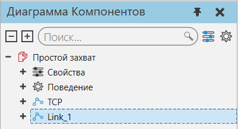

Определение смещения звена |
|
Команда Переместить, другие инструменты и свойства могут использоваться для определения свойства Смещение выбранного узла и его соединения. 1.В трехмерном мире выберите компонент. 2.Нажмите на вкладку Моделирование, а затем в панели Диаграмма компонента, Дерево узлов компонента , выберите узел, отличный от корневого узла.  3.Сделайте одно из следующих действий: ·Чтобы задать смещение узла с помощью манипулятора, на вкладке Моделирование, в группе Действия, нажмите Переместить, а затем используйте манипулятор в трехмерном мире так же, как при перемещении компонента. В этом случае манипулятор показывает ось соединения узла в виде стрелки, указывающей от начала координат манипулятора. ·Чтобы привязать смещение узла к месту, на вкладке Моделирование, в группе Инструменты, нажмите Привязка, а затем привяжите смещение так же, как при привязке компонента. В этом случае смещение отображается в виде осей координат, которые вы можете просмотреть в трехмерном мире. ·Чтобы выровнять смещение узла, на вкладке Моделирование, в группе Инструменты, нажмите Выровнять , а затем выровняйте смещение так же, как при выравнивании компонента. ·Чтобы определить смещение узла с помощью выражения, на панели Свойства, щелкните поле свойства Offset, а затем напишите выражение. В этом случае можно использовать свойства компонента и поведения, чтобы сделать смещение узла параметрическим. Примечание: Чтобы при использовании инструментов перемещения изменять только координату соединения узла, не перемещая геометрию узла, в группе Режим перемещения выберите режим Выделено. После изменения координаты соединения узла не забудьте вернуть режим выделения на Иерархия.
|